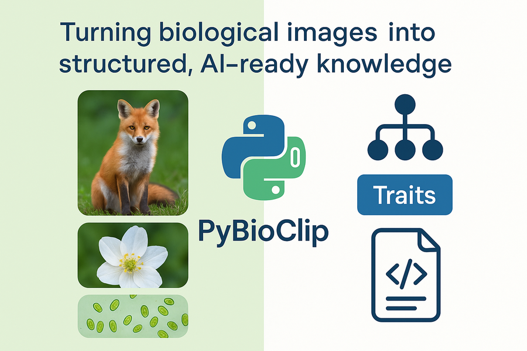

Tool Tutorials
The Imageomics Institute is continually developing tools that support biological research. As new tools are released, this page will collect tutorials that help researchers bring them into their own workflows.
Available Tutorials

PyBioClip
Turn biological images into structured, AI-ready knowledge.
Learn how to encode images with standardized, machine-readable metadata.